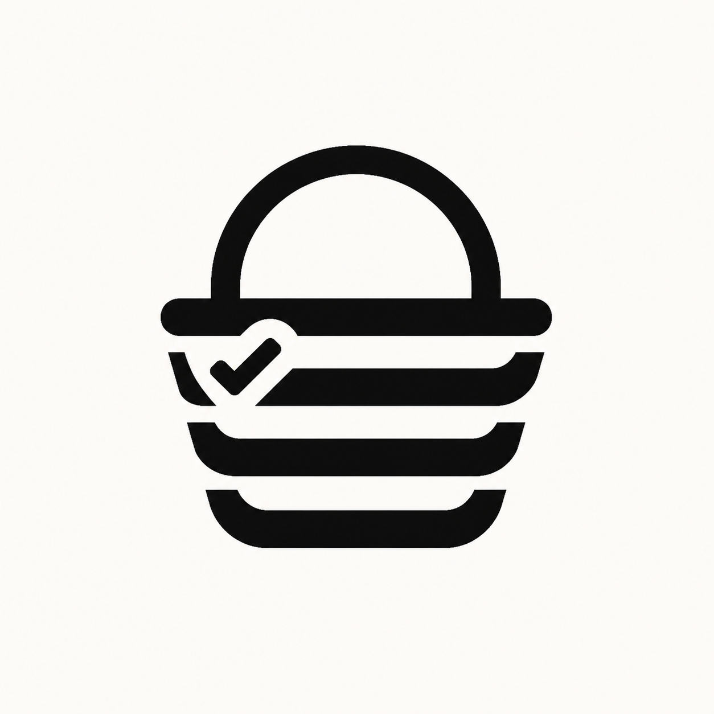
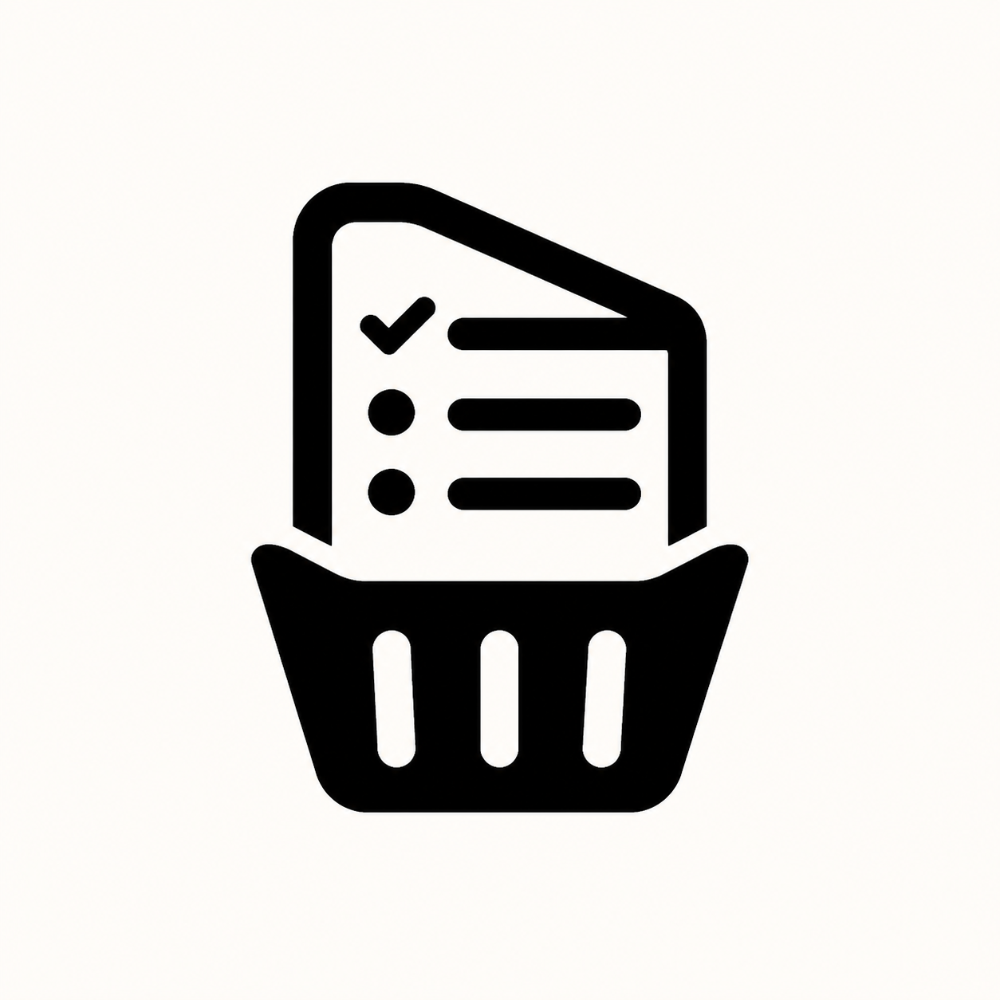
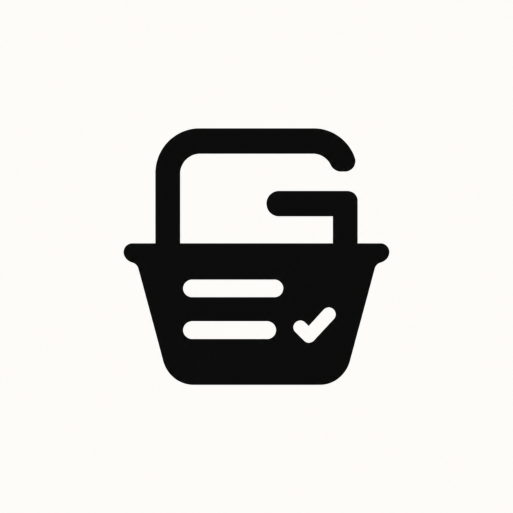
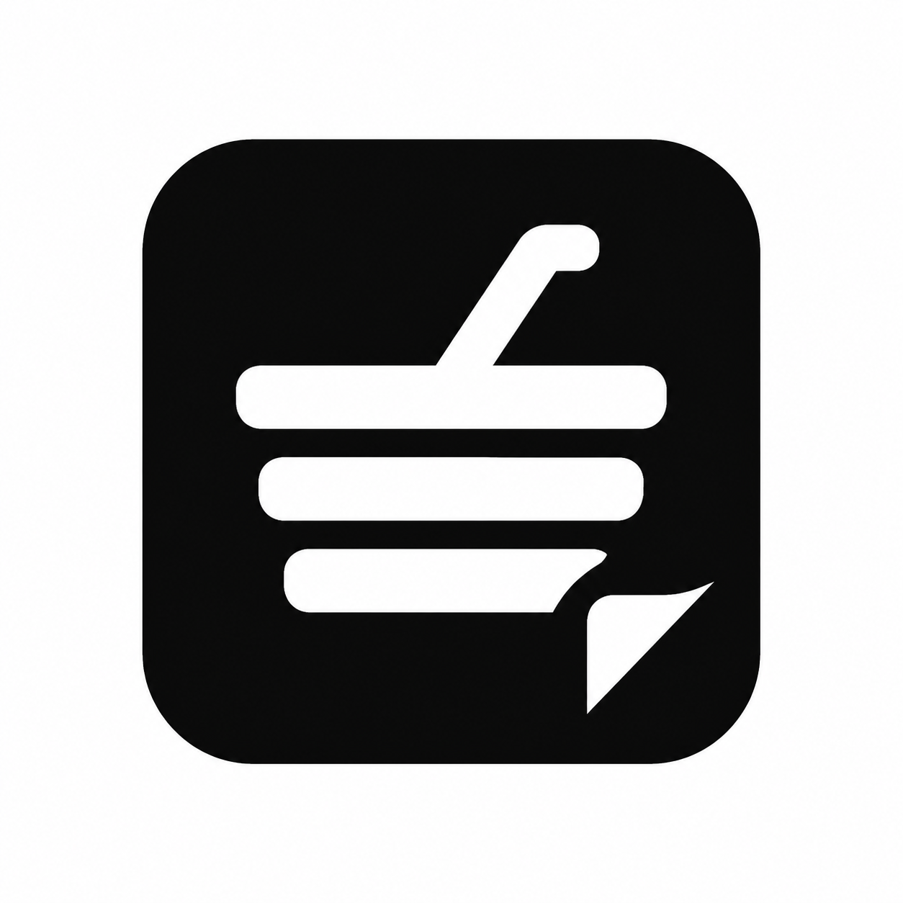

A · Basket Rows
Strongest ideaThe list rows become the basket itself. Compact, friendly, and the most successful fusion of the two concepts.
Refine: fewer rows,
cleaner check
cleaner check
Four deliberately different constructions, evaluated in monochrome first. The colored size chips are only scale tests; palette and final geometry come after selecting or combining a direction.

The list rows become the basket itself. Compact, friendly, and the most successful fusion of the two concepts.

Immediately understandable, but it feels like two objects stacked together and carries too much detail for a favicon.

A strong app-icon shape with a discoverable G. The current letterform is too explicit, but its mass and simplicity are promising.

Highly robust and modern, though the basket reading is currently weak and the corner check becomes visually sharp.